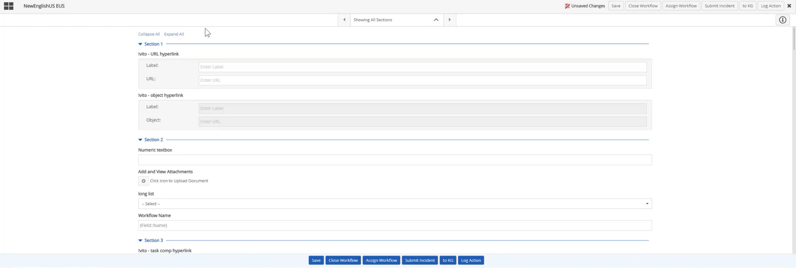
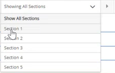
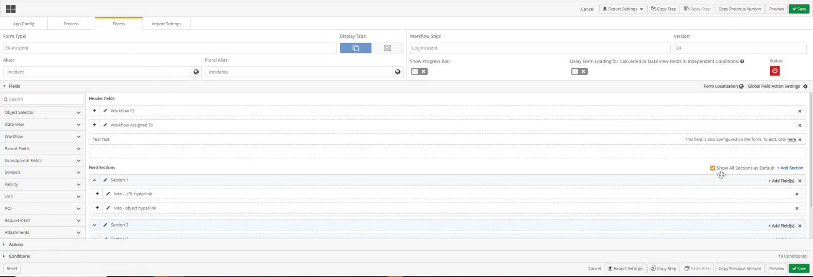

When “View all Sections” for a Workflow step is selected in designer mode by an admin, you can view all sections of the workflow form on one page
By default, all sections of the form will be expanded.

On the Workflow step:
The Collapse All Sections functionality will only appear after the user has selected "Show All Sections" in designer mode.
If users would like to separately view a section on a form, users can still click the section selector dropdown textbox and select a specific section. This can help with forms that are long, and users would like to view the form by sections. See section Breaking a Form into Sections using a Selection Selector for further information.

To View all sections of a Workflow on one page

.